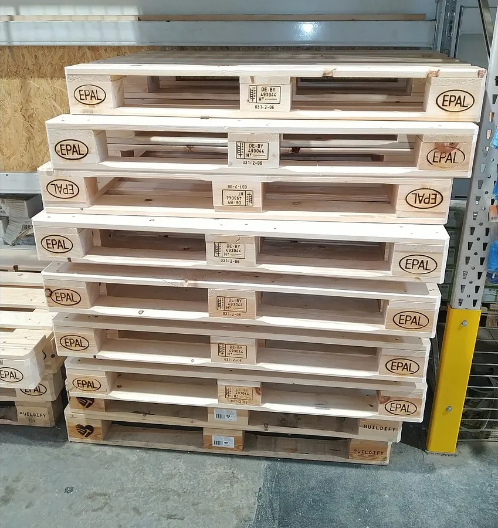

Palette bois réemployée
La palette bois réemployée est une alternative fiable et économique à la palette neuve. Chez Bois Tunisie, chaque palette réemployée est contrôlée une à une, réparée si nécessaire et reclassée avant de repartir en circulation.
Contrôlées, réparées, reclassées
Chaque palette passe par un contrôle qualité : nous inspectons l'état des planches, des dés et de la structure, nous remplaçons les éléments abîmés quand il le faut, puis nous reclassons selon la solidité et l'usage visé. Vous recevez des palettes propres, stables et prêtes à l'emploi, sans mauvaise surprise.

Une solution économique et plus durable
Réemployer une palette, c'est alléger le coût d'achat tout en prolongeant la vie du bois : une démarche à la fois économique et plus respectueuse de l'environnement. Ces palettes conviennent à de nombreux usages — stockage, manutention interne, expédition nationale — selon la classe retenue. Indiquez-nous le format et la quantité souhaités : nous vous proposons l'option la mieux adaptée.
Questions fréquentes
La qualité des palettes réemployées est-elle fiable ?
Chaque palette bois réemployée est inspectée avant d'être proposée : nous contrôlons l'état des planches, des dés et de la structure, nous réparons au besoin et nous reclassons selon la solidité. Seules les palettes conformes à l'usage visé quittent l'atelier.
Coûtent-elles moins cher que les palettes neuves ?
La palette bois réemployée revient en général moins cher que la neuve, tout en restant fiable pour de nombreux usages. Le prix dépend du format, de l'état et du volume : contactez-nous pour un devis ajusté à votre besoin.
Quels formats sont en stock ?
Nous tenons des formats courants, dont les standards EUR/EPAL (120×80, 120×100), selon la disponibilité du stock. Indiquez-nous le format et la quantité souhaités : nous vous confirmons ce qui est disponible.